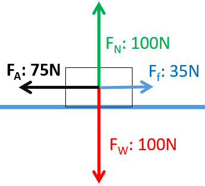

Calculating Unknowns
There are only a couple of formulas that you need to understand in the Forces topic of Mechanics. All the formulas you need will already be given to you in the exam, which is helpful!
- Mass, Acceleration, Force
This formula has three variables. Force (F), mass (m), and acceleration(a). F = m*a Use this formula to calculate how much force is acting on an object when you know its mass, and the acceleration, normally this acceleration is 10 meters per second squared to due gravity. Study this formula by doing practice questions from the SciPAD, or by searching them up.
-
Net Force

This isn't a formula in a sense, but it's a calculation that you need to understand. Net force is the sum of all pushing and pulling forces acting on an object. This doesn't mean you just add all the opposite forces together, because net force is a vector sum. For example, if I had 6N applied force in the rightwards direction, and 3N of friction force opposing this, then 6-3=3N net force to the right side. The diagram on the right shows a 75N friction force left, and 35N applied force to the right. 75-35 = 40N to the left. This means that the box has a net force of 30N to the left. The weight force is 100N, while the normal force is also 100N. 100-100= no net force going down or up. This means that the box will be staying at the same height, not moving up, or down as the net force is 0.